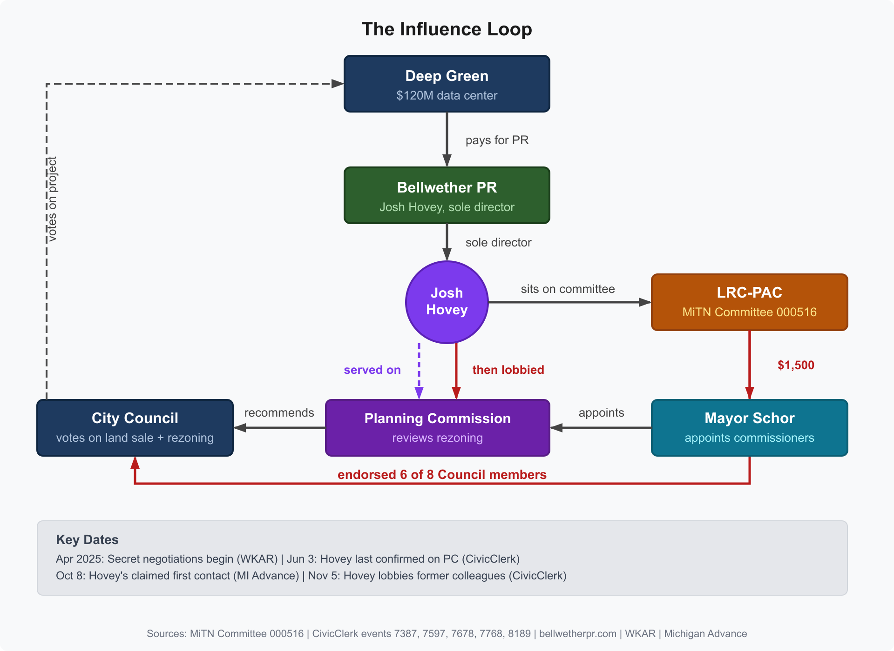
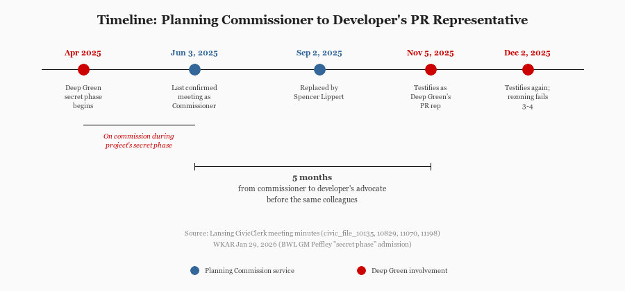
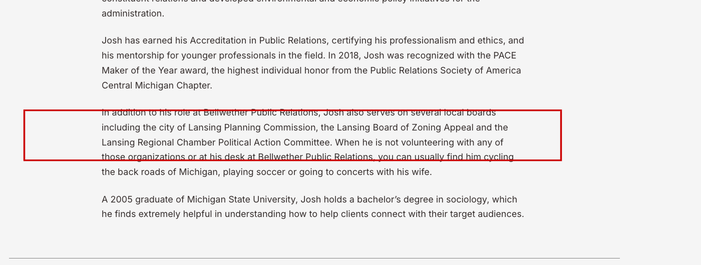

Lansing: Who Will Vote on Deep Green? Council Members Funded by Deep Green's PR Rep and LRC-PAC
Deep Green Technologies pays Bellwether PR for public relations. Bellwether's sole director sits on the LRC-PAC (Lansing Regional Chamber Political Action Committee), which endorsed 6 of the 8 Council members who will vote on Deep Green's project. The same PAC contributed to Mayor Schor, who appoints the Planning Commissioners who review it. Five months before lobbying for the project, Bellwether's director was a sitting member of that commission.
LANSING, Mich. — Josh Hovey, partner at Bellwether Public Relations and sole director of the corporation (LARA Entity 800628086), served as a Lansing Planning Commissioner through at least June 3, 2025. Five months later, on November 5, he appeared before the same body as Deep Green Technologies' paid PR representative, advocating for a $120 million data center on city-owned land. His former colleagues were the ones voting.
Hovey also sits on the committee of the Lansing Regional Chamber Political Action Committee (LRC-PAC, MiTN Committee 000516). That PAC endorsed 6 of the 8 Council members who will cast final votes on the Deep Green project. The land sale is scheduled for March 23; the conditional rezoning hearing is scheduled for April 6, 2026.

The Revolving Door
CivicClerk Planning Commission meeting minutes establish the timeline. The Planning Commission is appointed by the mayor. Hovey is listed as a sitting 4th Ward commissioner on the June 3, 2025 roll call, opening and closing public hearings, voting on motions. By the September 2, 2025 meeting, Spencer Lippert holds his seat.
When did Bellwether's engagement with Deep Green begin? On March 6, 2026, Hovey told Michigan Advance reporter Kyle Davidson that he was first contacted on October 8, 2025, and produced an email from Deep Green consultant Adam Bitely to support that date. "I didn't even know who Deep Green was until probably October," he said.
Deep Green filed its rezoning petition on October 17, 2025, nine days after Hovey's claimed first contact. BWL General Manager Dick Peffley told WKAR on January 29, 2026 that Deep Green's negotiations began in a "secret phase" starting April 2025. Hovey was an active Planning Commissioner through at least June 2025. He sat on the commission during the first two months of negotiations for a project his firm would begin representing four months later.
What Hovey Told Michigan Advance
In the same March 6 interview, Hovey told Davidson that he stepped away from the commission "at the end of the summer" and that "the last meeting he attended as a commissioner was in March" 2025.
The June 3, 2025 meeting minutes tell a different story. The roll call lists Hovey as present. He participated in votes and motions. By the September 2, 2025 meeting, Spencer Lippert holds his seat. No public announcement of Hovey's departure has been found.
Hovey also told Davidson he "always recused himself" when clients came before the commission, calling it a "strong track record" of ethical behavior. Three paragraphs below, Davidson noted that the Lansing City Attorney's office "did not respond to a request to confirm Hovey's account." Regarding the 2019 marijuana vote, City Clerk Chris Swope had already confirmed to City Pulse that no Affidavit of Disclosure was filed.
Commissioners Alexander, Jackson, Klont, Muchmore, O'Dell, and Ruge were still serving when Hovey appeared to lobby them on November 5.

The False Website Claim
As of this writing, Hovey's bio on bellwetherpr.com states he "serves on several local boards including the city of Lansing Planning Commission, the Lansing Board of Zoning Appeal and the Lansing Regional Chamber Political Action Committee." The city's own Planning Commission page lists eight current members: Klont, Alexander, Jackson, Lippert, Muchmore, O'Dell, Ruge, and Cox. Hovey is not among them.
Wayback Machine snapshots show this claim has been present continuously since at least May 2022, when the firm was still named Martin Waymire. It was carried over unchanged during the rebrand to Bellwether PR in October 2024.

What He Said at the Hearings
Hovey testified at both the November 5, 2025 and December 2, 2025 Planning Commission hearings on the Deep Green rezoning (Petition Z-2-2025). The minutes identify him as "Josh Hovey, Bellwether Public Relations, public relations for Deep Green."
At the November 5 hearing, he "spoke on Deep Green's transparency and the media outreach they conducted prior to the Planning Commission meeting" and "commented on the criteria related to conditional rezonings." At the December 2 hearing, he "spoke on the appropriateness of the rezoning request in relation to the light industrial uses of BWL next door." BWL is simultaneously pursuing a $100 million steam-to-hot-water conversion whose long-term heat source gap Deep Green's waste heat would fill.
He was not the only connected voice in the room. Chamber President and CEO Tim Daman, who also serves as treasurer of the LRC-PAC (MiTN Committee 000516), testified in support at both hearings. Chamber SVP Steve Japinga testified at the November hearing and submitted the Chamber's formal support letter — and separately submitted a letter through an advocacy platform identifying himself only as "a member of the local business community." That letter CC'd Mayor Andy Schor and Planning Director Rawley Van Fossen, the Schor appointee whose department processes rezoning applications.
On December 2, the rezoning failed 3-4.
The 2019 Precedent
This is not the first conflict-of-interest question involving Hovey and the Planning Commission. In early 2019, while sitting on the commission, he voted to delete the 500-foot distance requirement between medical marijuana dispensaries. The motion passed 4-0.
At the same time, Hovey was launching the Michigan Cannabis Industry Association, a trade group that would benefit directly from relaxed dispensary zoning. Three Council members called for his resignation. Hovey told City Pulse: "I'm not representing any of the medical marijuana businesses, so I can't see how there is a conflict."
City Clerk Chris Swope confirmed to City Pulse that no Affidavit of Disclosure had been filed, as required by Lansing's ethics ordinance. Under MCL 125.3815, failure to disclose a potential conflict of interest constitutes malfeasance in office.
The Invisible Client
Bellwether PR lists "Social Media Strategy" as a core service. The firm maintains active accounts on Twitter/X, Instagram, LinkedIn, and Facebook, and regularly promotes clients and case studies. Deep Green, a $120 million project that generated months of sustained media coverage and multiple public hearings, appears nowhere on bellwetherpr.com.
Deep Green is not listed on Bellwether's "Our Work" page. No press releases have been issued through Bellwether's channels. The firm's client logo carousel on its homepage does not include Deep Green. (It does include BWL and Climate Power.) Zero social media posts about the project appear on any of Bellwether's accounts.
The only public confirmations of the client relationship come from third-party news coverage. WKAR reported on January 16, 2026 that Deep Green retained Bellwether for communications. City Pulse reported that the January 24 community open house "was facilitated in part by Bellwether Public Relations." WKAR disclosed in the same article that "Bellwether PR is a financial supporter of WKAR." Bellwether sponsors Off the Record, WKAR's flagship political discussion show.
What Happens Next
After the December 3-4 rejection, Deep Green withdrew its petition and resubmitted from scratch. On March 3, 2026, the Planning Commission heard the resubmitted petition. The rezoning passed 5-2, with two commissioners who voted No in December, Jackson and Ruge, flipping to Yes. Hovey did not testify at the March hearing.
The recommendation now goes to City Council, which has split the decision into two separate votes. The land sale hearing is scheduled for March 23; the conditional rezoning hearing is scheduled for April 6, 2026. Six of the eight Council members who will cast those votes were endorsed by the LRC-PAC (MiTN Committee 000516), the political action committee on whose committee Deep Green's PR representative sits. Council member Jeremy Garza, whose entire campaign was funded by unions and PACs, will also vote.
Methodology
This analysis is based entirely on publicly available documents: Planning Commission meeting minutes from the Lansing CivicClerk portal (June 3, September 2, November 5, December 2, 2025, and March 3, 2026), campaign finance records from MiTN Committee 000516, the Bellwether PR website, Wayback Machine snapshots, the BWL newsroom announcement, and news reporting from WKAR (Jan 16, Jan 29, Mar 10, 2026), Michigan Advance (Mar 4, Mar 6, 2026), and City Pulse. Every claim in this article can be verified by downloading the source documents from the links provided.